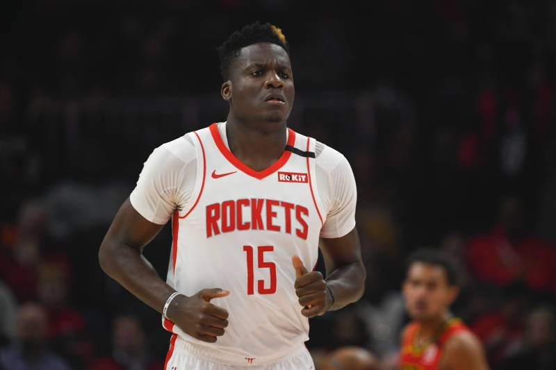
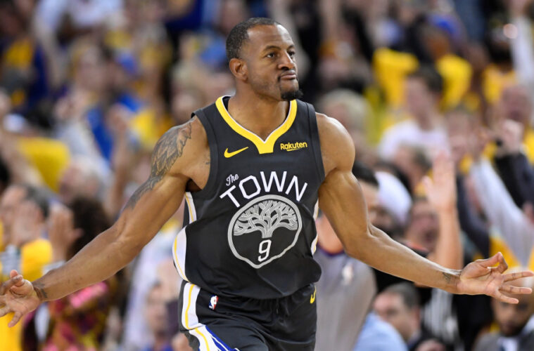
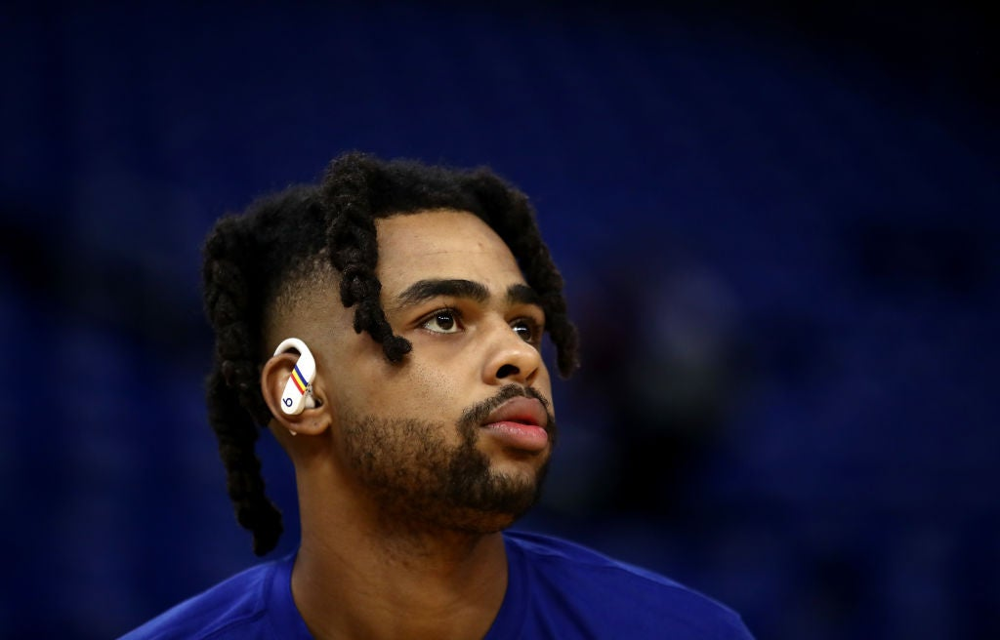
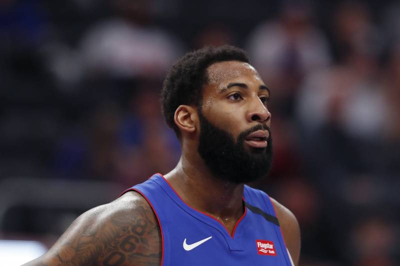

Calificando los principales traspasos en el Deadline 2020 de la NBA
por Pedro Oliveira
Mucha gente no va a leer esto, pero no puedo evitar querer dejar para la posteridad mis pensamientos actuales sobre lo que sucedió en la NBA durante el cierre del mercado de pases. Un evento que se esperaba fuese más tranquilo de lo habitual (y seamos sinceros, lo fue a comparación de ediciones pasadas), acabó con varias transacciones interesantes tanto para la presente campaña como los próximos años.
Empezaré con un cambio que no sucedió durante el día de ayer (empecé a escribir esto el viernes 7 de Febrero), pero tiene una repercusión importante al ser uno de los que más impacta a dichos equipos esta temporada y para el futuro.

Blockbuster de 4 equipos por Clint Capela
Larga la vaina, pero bueno, aquí está. Mucho que digerir pero los resultados son claros: Houston es el gran perdedor, Atlanta el equipo que más ganó. Los Hawks se llevaron al suizo de 25 años, que es un jugador de tremenda calidad (13.9 puntos, 13.8 rebotes y 1.8 bloqueos por partido este año) y aunque su contrato es bastante pesado (53 millones de dólares restantes hasta 2023), es una gran apuesta para un equipo joven y prometedor.
Por el lado de los Timberwolves y los Nuggets, ambos equipos recibieron buenos retornos cada uno en sus respectivas posiciones: Minnesota se llevó un buen grupo de prospectos por parte de Denver (destaca Malik Beasley, quién podría ser un jugador importante para el equipo desde el inicio) además de una selección de primera ronda con buena valía. Los Nuggets consiguieron también una selección de primera ronda y buena profundidad para su banca de relevos.
Aun intento comprender la necesidad de Houston de pagar a Covington a un precio tan elevado, pero lo que realmente menos entiendo es ¿Como vendes a Clint Capela a tan bajo precio? Si bien Robert Covington es un jugador ideal para el esquema del entrenador Mike D'Antoni, no tiene ningún tipo de sentido explotar tus mejores recursos a escalas tan limitadas. Todo parece ser signo de desesperación, por el rendimiento y la presencia del contrato de Capela.

Fin de la Saga Iguodala
Luego de una novela innecesaria en la que el veterano André Iguodala se negó a jugar con los Memphis Grizzlies y forzó su salida desde el inicio de la campaña a un equipo con más posibilidades de ser contendiente al título, el último día del mercado se le concedió el deseo al tres veces campeón de la NBA.
Miami terminó siendo el comprador, y aunque pagó algo caro la llegada de Iguodala (además de una extensión de contrato amplia para el mismo jugador, sin haber puesto un pie en cancha), su inclusión a la nómina solo puede traer cosas positivas a un equipo tan competitivo y férreo como Miami. Añadiendo también la llegada de Jae Crowder, la banca del Heat nunca se ha visto tan amenazante como ahora.
Los Grizzlies consiguieron a un jugador sólido y con bastante potencial de crecer aun en Justise Winslow, quién lleva ya 4 campañas de NBA en su historial y esta por cumplir tan solo 24 años. Si Winslow supera sus problemas físicos, tiene la posibilidad de ser un gran contribuyente en la nueva era de Memphis. Gorgui Dieng también representa una mejora en la banca del equipo.
La inclusión de los Wolves es bastante irrelevante en este cambio, es tan solo un mediador para que las finanzas del traspaso se den. De igual forma, James Johnson cubre una de las posiciones más débiles del equipo si vemos el lado más positivo del asunto.

Un Hogar para Russell
De ser el líder de los Brooklyn Nets hace un año, sorprender a toda la liga por su fichaje con Golden State en 2019, ahora el base de 23 años se convierte en la nueva esperanza de los Minnesota Timberwolves. La franquicia puso sus fichas en una dupla con Karl-Anthony Towns y su mejor amiga, Russell, para ser la nueva base del equipo los próximos años. No fue una ganga, pues la selección de 2021 podría terminar en una posición alta si Minnesota no comienza a mejorar su plantel pronto, pero es un paso en la dirección correcta si sus intenciones realmente son convertirse en equipo de postemporada.
El divorcio con Andrew Wiggins termina siendo un final más agrio que dulce para los fanáticos del equipo, pues nunca pudo alcanzar su potencial en los Timberwolves y su contrato (casi 96 millones de dólares hasta 2023) se tornó más en un problema que un buen negocio. Haberlo utilizado para conseguir a D'Angelo fue un buen intercambio para Minnesota.
Golden State salió mejor librado aun de esto, pues consiguió aun más selecciones de draft, que siempre serán cotizadas en cualquier mercado de pases habido y por haber. Teniendo uno de los peores récords en la NBA actualmente, los Warriors están en una temporada de transición donde reunir recursos es más importante que sumar victorias. Su verdadero objetivo será competir por el campeonato del 2021: y probablemente usen los numerosos recursos que han acumulado desde el año pasado para fortalecer su equipo de cara la siguiente campaña.
Y mucho cuidado, si los Dubs no pretenden usar a Wiggins como anzuelo para así hacerse con un jugador estrella. Mientras tanto, el canadiense tendrá media temporada para convencer a la franquicia de que pertenece en su futuro equipo ganador.

D de Desechado
Dos de los peores equipos en la NBA en mucho tiempo, hacen un cambio del cual hasta el día de hoy no le encuentro el mínimo sentido, por lo menos para los Pistons. O sea, los Cavs se robaron a Andre Drummond descaradamente, regalando una selección de draft que probablemente no tenga importancia alguna, y un par de contratos que no les servían de nada Es inaudito de parte de Detroit el cambiar a su mayor estrella por nada, literalmente NADA.
Si bien, los Pistons se sacan de encima la posibilidad de pagarle al centro de 26 años su exagerada opción de contrato con una valía de 28.7 millones de dólares, ¿cuál es el punto? No van a mejorar la plantilla ni en lo más mínimo, y el retorno que recibieron por Drummond es vergonzoso. ¿Por qué no simplemente mantenerlo y ver que surge la siguiente temporada? Donde tienes tiempo de sobra para trabajar en todos los problemas del equipo. Sé que Andre es un jugador que a pesar de su números groseros (16.5 puntos, 14.5 rebotes, 2.5 asistencias, 1 robo y 1.5 tapas por partido) no tiene el impacto ideal que el público general querría de su jugador franquicia, pero no significa que no tenga salvación alguna.
Pido una disculpa por no pasar a discutir lo que obtiene Cleveland de este cambio pero me mantiene perplejo la mediocridad e ineptitud de la directiva de Detroit, simplemente no encuentro el razonamiento de perder a Drummond, quién ha pasado toda su carrera en tu equipo, y siendo un jugador importante, por no querer pagarle el último año de su contrato; dinero que ni siquiera van a usar en competir la próxima temporada.
En fin, para los Cavaliers era un negocio bastante redondo:
El dinero que estás perdiendo en jugadores que ni siquiera pisan cancha, lo inviertes ahora en uno de los mejores rebotadores de la liga.
Formas un dúo entre Kevin Love y Andre Drummond, que obviamente no te va a dominar la liga, pero al menos representa una pareja con potencial de convertirse en algo interesante. Aunque sea para los fanáticos de los Cavs.
La experiencia del mismo Drummond es una influencia positiva para tu equipo lleno de jóvenes como Darius Garland, Kevin Porter Jr. y Collin Sexton. Te ayuda además a descifrar quién de estos prospectos muestra mejores cualidades para jugar con un centro dominante. Con puras intenciones de seguir armando un equipo a futuro.
Para Andre esto es un llamado de atención: es hora de despertar y crear un impacto, o saber que luego de tu último año de contrato, la gente solo te verá como un potencial desperdiciado y un simple jugador de rotación.